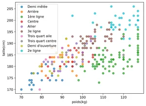
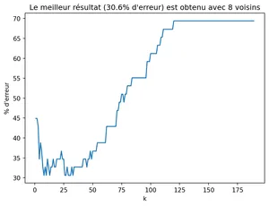

Vous allez travailler sur un tableau de données des joueurs de rugby du top-14 de la saison 2019-2020 issues de la page de la ligue nationale de rugby:
Votre travail consiste à attribuer un poste sur le terrain à un joueur à partir de son poids et de sa taille en utilisant l’algorithme des k plus proches voisins:
Demi mêlée,
Arrière,
1ère ligne,
…
1.1 Lecture des données
On commence par lire les données du fichier joueurs-top14.csv sous la forme d’un tableau de tableau.
import csv## Lecture du fichier csv## et stockage dans une liste de liste## taille, le poids et le poste si non videjoueurs = []withopen('./joueurs-top14.csv', encoding="utf-8") as csvfile: reader = csv.DictReader(csvfile)# Itération sur les lignesfor ligne in reader: taille = ligne["taille(cm)"] poids = ligne["poids(kg)"] poste = ligne["poste"]if taille and poids and poste: joueurs.append([int(taille), int(poids), poste])print("Nbre de joueurs:", len(joueurs))print("Premier joueur:", joueurs[0])print("Quatrième joueur:", joueurs[3])
>>sortie
Nbre de joueurs: 239
Premier joueur: [176, 85, 'Demi mêlée']
Quatrième joueur: [180, 95, 'Centre']
1.2 Lister les postes
Compléter le code suivant pour créer une liste des postes existants.
postes = []for joueur in joueurs: poste = ...if poste notin postes: ...## testsassertlen(postes) ==10print("Si on choisissait au hasard on aurait une chance sur 10")print("Soit 90% d'erreurs")assert postes == ['Demi mêlée','Arrière','1ère ligne','Centre','Ailier','3e ligne','Trois quart aile','Trois quart centre',"Demi d'ouverture",'2e ligne']
postes = []for joueur in joueurs:# le poste est à l'indice 2 poste = joueur[2]if poste notin postes: postes.append(poste)## testsassertlen(postes) ==10print("Si on choisissait au hasard on aurait une chance sur 10")print("Soit 90% d'erreur")assert postes == ['Demi mêlée','Arrière','1ère ligne','Centre','Ailier','3e ligne','Trois quart aile','Trois quart centre',"Demi d'ouverture",'2e ligne']
>>sortie
Si on choisissait au hasard on aurait une chance sur 10
Soit 90% d'erreur
1.3 Observation des postes sur un graphique
import matplotlib.pyplot as pltdef tracé_graph(joueurs):for poste in postes:# poids des joueurs à ce poste poids = [joueur[1] for joueur in joueurs if joueur[2]== poste]# taille des joueurs à ce poste tailles = [joueur[0] for joueur in joueurs if joueur[2]==poste] plt.scatter(poids, tailles, label=poste, alpha=0.7)# Annotations du graphique plt.xlabel("poids(kg)") plt.ylabel("taille(cm)") plt.legend()tracé_graph(joueurs)

1.4 Séparation des données pour le test
On divise les données en deux parties:
entrainement: les 190 premiers joueurs
test: les 49 derniers
train = [joueurs[i] for i inrange(190)]test = [joueurs[i] for i inrange(190, len(joueurs))]len(train), len(test)
(190, 49)
1.5 Implémentation de la fonction distance
On mesure la distance Euclidienne entre deux joueurs sur le graphique grâce au théorème de Pythagore dans la fonction def distance(j1, j2).
def distance(j1, j2):"calcule la distance euclidienne entre deux joueurs" x1, y1, p1 = j1 x2, y2, p2 = j2return ((x2-x1)**2+(y2-y1)**2)**0.5## appel entre les deux premiers joueurs des jeux de donnéesdistance(train[0], test[0])
30.01666203960727
1.6 Algorithme du plus proche voisin
On commnce par écrire une fonction qui recherche dans les données d’entrainement(train) le joueur le plus proche du joueur de test d’indice i.
def plus_proche(i: int):"Renvoie le poste du plus proche voisin dans train du joueur de test d'indice i" joueur_test = test[i]# on initialise l'indice et la distance minimum sur # la première donnée d'entraînement j_mini =0 d_mini = distance(joueur_test, train[0])# on recherche le joueur avec la distance minimum# dans les données d'entrainementfor j inrange(len(train)): d = distance(joueur_test, train[j]) ...return ...print("Prévision juste pour le 1e joueur", test[0], plus_proche(0))assert plus_proche(0) == test[0][2]print("Prévision juste pour le 2e joueur", test[1], plus_proche(1))assert plus_proche(1) == test[1][2]print("Prévision juste pour le 3e joueur", test[2], plus_proche(2))assert plus_proche(2) == test[2][2]print("Prévision fausse pour le 4e joueur", test[3], plus_proche(3))assert plus_proche(3) != test[3][2]assert plus_proche(3) =='Ailier'
def plus_proche(i: int):"Renvoie le poste du plus proche voisin dans train du joueur de test d'indice i" joueur_test = test[i]# on initialise la distance minimum sur # des données d'entraînement j_mini =0 d_mini = distance(joueur_test, train[0])for j inrange(len(train)):# on calcule la distance du joueur_test# avec le joueur d'indice j d = distance(joueur_test, train[j])if d < d_mini:# c'est le nouveau minimum j_mini = j d_mini = d# je renvoie le poste(indice 2) du # joueur étant à l'indice i_minireturn train[j_mini][2]print("Prévision juste pour le 1e joueur", test[0], plus_proche(0))assert plus_proche(0) == test[0][2]print("Prévision juste pour le 2e joueur", test[1], plus_proche(1))assert plus_proche(1) == test[1][2]print("Prévision juste pour le 3e joueur", test[2], plus_proche(2))assert plus_proche(2) == test[2][2]print("Prévision fausse pour le 4e joueur", test[3], plus_proche(3))assert plus_proche(3) != test[3][2]assert plus_proche(3) =='Ailier'
>>sortie
Prévision juste pour le 1e joueur [177, 115, '1ère ligne'] 1ère ligne
Prévision juste pour le 2e joueur [182, 110, '1ère ligne'] 1ère ligne
Prévision juste pour le 3e joueur [203, 120, '2e ligne'] 2e ligne
Prévision fausse pour le 4e joueur [181, 100, 'Arrière'] Ailier
1.7 Calcul du taux d’erreur
Puisque l’algorithme commet des erreurs regardons combien il en fait et quel pourcentage cela représente.
erreur =0## compte le nb de fausses prédictionsfor i inrange(len(test)): poste_predit = plus_proche(i) poste_reel = test[i][2]if ...: ...assert erreur ==22print(round(100*erreur/len(test), 1), "% d'erreur")
Plutôt que de regarder le plus proche voisin, nous allons regarder les k plus proches voisins du joueur de test dans les données d’entrainement.
Pour cela nous allons créer une liste des postes des plus proches voisins, puis grâce à la fonction suivante, nous en déduirons le poste le plus probable d’après ces voisins.
def occurence_max(tab):"Renvoie la valeur qui a le plus d'occurences dans un tableau" dico = {k: 0for k in tab}for k in tab: dico[k] +=1 maxi, k_max =0 , 0for k, v in dico.items():if v > maxi: maxi, k_max = v , kreturn k_maxassert occurence_max(["Ailier", "Ailier", "Pilier"]) =="Ailier"assert occurence_max(["Ailier", "Pilier", "Ailier"]) =="Ailier"assert occurence_max(["Pilier", "Ailier", "Pilier",]) =="Pilier"
Il ne reste plus qu’à créer cette liste de poste des plus proches voisins dans la fonction suivante.
def k_plus_proche(i: int, k:int):"Renvoie le poste d'après les k plus proches voisins du joueur de test d'indice i dans train"# joueur dont on cherche le poste joueur_test = test[i]# liste destinée à accueillir les postes des k plus proches voisins postes_voisins = []for j inrange(len(train)): ...return occurence_max(poste_voisins)## En fonction de k la prévision n'est pas la mêmeassert k_plus_proche(3, 1) =='Ailier'assert k_plus_proche(3, 5) =='1ère ligne'
def k_plus_proche(i: int, k:int):"Renvoie le poste d'après les k plus proches voisins du joueur de test d'indice i dans train" joueur_test = test[i]# on crée un tabelau avec toutes les distances et les indices distances = []for j inrange(len(train)): joueur = train[j] distances.append((distance(joueur, joueur_test), j))# on tri la liste par distance distances.sort()# on ne garde que les k premiers poste_voisins = [train[distances[j][1]][2] for j inrange(k)]return occurence_max(poste_voisins)## En fonction de k la prévision n'est pas la mêmeassert k_plus_proche(3, 1) =='Ailier'assert k_plus_proche(3, 5) =='1ère ligne'
1.9 Recherche de la meilleure valeur de k
Nous allons tracer le taux d’erreur en fonction du nombre k de voisins choisis pour trouver la meilleure valeur de k possible.
xs = []ys = []for k inrange(1, len(train)): erreur =0for i inrange(len(test)): joueur_test = test[i]if joueur_test[2] != k_plus_proche(i,k): erreur +=1 xs.append(k) ys.append(round(100*erreur/len(test), 1))plt.plot(xs, ys)plt.xlabel('k')plt.ylabel("% d'erreur")plt.title(f"Le meilleur résultat ({min(ys)}% d'erreur) est obtenu avec {xs[ys.index(min(ys))]} voisins")plt.show()

1.10 Améliorations possibles
Comme les tailles des joueurs sont à peu près deux fois plus grandes que les poids, on accorde une plus grande importance à leur taille. On pourrait:
Normaliser les tailles et poids.
Utiliser l’IMC.
Rechercher d’autres informations qui nous informeraient sur leurs qualités physiques telles que leur temps au 100 m …